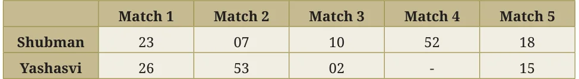

The runs scored by Shubman and Yashasvi in a cricket series are given in the table below. Who do you think performed better?
| Match 1 | Match 2 | Match 3 | Match 4 | |
|---|---|---|---|---|
| Shubman | 0 | 17 | 21 | 90 |
| Yashasvi | 67 | 55 | 18 | 35 |
Shreyas says, "Both their performances are similar since Yashasvi scored more in the first and second matches, whereas Shubman scored more in the third and fourth".
Vaishnavi says, "I think Shubman performed better because he scored the highest number of runs in a match — 90!".
Shreyas says, "No! Yashasvi batted better since the total number of runs he made is 175, while Shubman made only 128".
Vaishnavi says, "Oh! Also, Yashasvi’s batting is more consistent — the difference between his maximum score and minimum score is lower".
The table below shows the runs scored by these two players in another series. Who do you think performed better in this series?

Vaishnavi says, "Here, Shubman performed better since his total is 110 runs, while Yashasvi’s total is 96 runs".
What do you think of Vaishnavi’s statement?
Shreyas says, "But Yashasvi made 96 runs in 4 matches and Shubman made 110 runs in 5 matches".
So, how do we say who performed better? It is often not simple to compare two groups of numbers and clearly say that one is better than the other.
Can a single number act as a representative of a group of numbers? For example, can we represent Shubman’s or Yashasvi’s batting in this series with one number? Discuss.
We saw one way already — the total of the values in the group! But, if the group sizes are different, then the total may not be an appropriate measure to compare.
In some matches, a player could have scored more and in other matches less. A representative number for the group can be found by balancing out these highs and lows. For example, we can add up the runs scored in all the matches and divide the total by the number of matches played. We call this value the ‘average’ or ‘arithmetic mean’ of the given data.
Here, the average number of runs scored by a player in a match = [Total runs scored by the player in all the matches] \(\div\) [Number of matches played].
Average number of runs scored by Shubman in a match \(= 110 \div 5 = 22\) runs.
Average number of runs scored by Yashasvi in a match \(= 96 \div 4 = 24\) runs.
In this series, Yashasvi’s average number of runs is higher than Shubman’s.
The Average or Arithmetic Mean (A.M.), or simply Mean, is calculated as follows:
$$\text{Mean} = \frac{\text{Sum of all the values in the data}}{\text{Number of values in the data}}$$